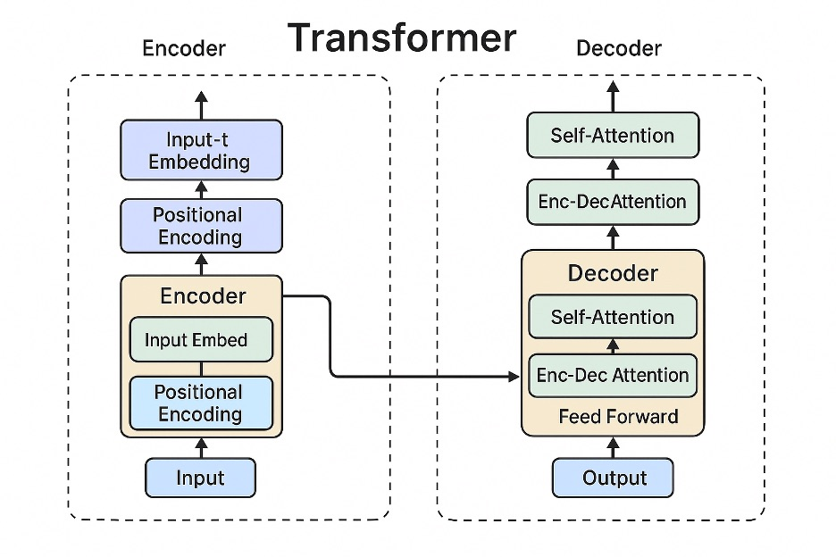
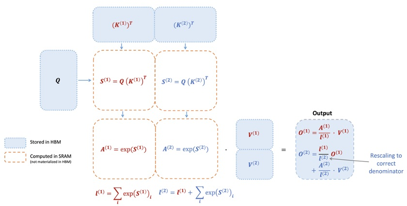
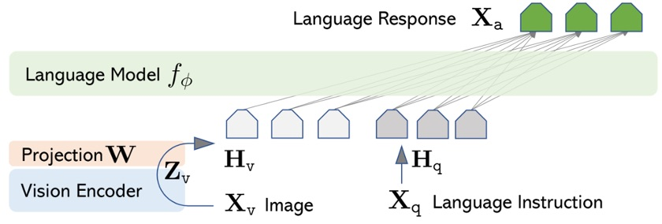

Week 8: Core Review and Latest Trends#
1. Transformer and SSM Architectures#

Overview of the basic Transformer encoder-decoder structure. Left side shows the encoder stack, right side shows the decoder stack. The Transformer processes input sentences by tokenizing them and then uses multi-head self-attention to compute relationships between tokens in parallel, integrating contextual information. Unlike RNNs that process sequentially, it can consider all tokens simultaneously, enabling faster training and parallelization of attention operations at each layer even when input length is \(N\). This architecture, introduced in Google’s 2017 “Attention Is All You Need” paper, became the foundation for large-scale language models (LLMs) such as BERT and GPT series. The Transformer’s major advantage of having no recurrence enables parallelization, leading to its widespread adoption across various fields including natural language processing, computer vision, reinforcement learning, and multimodal learning.
Meanwhile, new sequence models based on State Space Models (SSM) have been proposed to address Transformer limitations. Notably, the S4 (Structured State Spaces for Sequence Modeling) model presented at ICLR 2022 utilizes solutions to continuous-time state space equations \(x'(t) = Ax(t) + Bu(t), \; y(t) = Cx(t) + Du(t)\) to efficiently process long sequences. S4 achieves linear time complexity \(O(N+L)\) with respect to sequence length \(L\) by parameterizing the state matrix \(A\) with a special structure for stable diagonalization and simplifying complex exponential response functions using Cauchy kernels. As a result, S4 achieved SOTA performance across all Long Range Arena benchmark tasks including Path-X, which requires 16,000-length inputs, and notably became the first to solve the Path-X problem with 88% accuracy, which no previous model had been able to solve. In summary, SSM-based models demonstrate the advantage of learning long-term dependencies while avoiding the \(O(N^2)\) inefficiency of Transformer self-attention. (Subsequent variants such as Diagonal SSM, which simplified S4, were also introduced at NeurIPS 2022.)
Checkpoint
What role does the multi-head self-attention mechanism play in Transformer models, and what advantages does it provide compared to RNNs?
How do state space models like S4 efficiently process long sequences, and what achievements have they demonstrated?
2. FlashAttention Optimization#
The self-attention operation in Transformers has a significant drawback: its time and memory complexity is \(O(N^2)\) with respect to sequence length \(N\). To address this, various efficient attention techniques have been researched, with FlashAttention being a representative optimization algorithm proposed by Tri Dao and others from Stanford’s HazyResearch team in 2022. FlashAttention achieves significant speed improvements by optimizing GPU memory I/O bottlenecks without losing attention accuracy. Specifically, instead of computing the entire \(N \times N\) attention scores at once, it processes query/key/value vectors in small tile units to handle partial sums. This approach dramatically reduces the number of read/write operations between GPU’s high-bandwidth memory (HBM) and on-chip SRAM, enabling accurate attention output without repeatedly writing intermediate results to memory. Through block-wise operations and softmax rescaling as shown in the figure below, only the results of each block are maintained in SRAM and combined for final output, eliminating unnecessary memory access. As a result, FlashAttention achieved sub-quadratic complexity (close to \(O(N)\)) compared to standard attention, showing 2-4x wall-time acceleration in practical use.

Conceptual diagram of FlashAttention performing self-attention operations tile by tile. Query \(Q\) and key \(K\) are divided into sub-matrices, loaded into SRAM (fast cache), then multiplication-softmax-value \(V\) multiplication operations are performed sequentially. By processing immediately without storing intermediate score matrices in HBM (global memory), accurate attention output is produced while minimizing memory I/O.
The achievements from FlashAttention implementation are impressive. For example, it reduced BERT-Large (sequence length 512) model training by approximately 15%, and reported over 3x training speed improvement for GPT-2 (length 1024). Additionally, thanks to FlashAttention-based optimization, it achieved above random guessing performance (61.4% and 63.1% accuracy respectively) for the first time on 16K token length Path-X and 64K token Path-256 tasks, which were previously nearly impossible, demonstrating that meaningful inference is possible even for very long inputs. In summary, FlashAttention is an innovative method that reduces memory usage to process longer contexts faster while not sacrificing the accuracy of attention results. Currently, most open LLMs including RedPajama, MPT, LLaMA, and Falcon have adopted this technique, making it essentially an industry standard, and recent research continues to improve Transformer operations with further developments like FlashAttention-2.
Checkpoint
What idea did FlashAttention use to optimize attention operation bottlenecks? (From a memory I/O perspective)
What specific performance improvements were reported with FlashAttention implementation, and what advantages does this technique have compared to standard attention?
3. Latest PEFT Techniques#
When fine-tuning large language models for downstream tasks, the traditional approach of updating all parameters is cost-inefficient. PEFT (Parameter-Efficient Fine-Tuning) techniques are approaches that efficiently tune models by learning only a small subset of parameters from the large model. Examples include the Adapter method that inserts additional adapter layers, and Prefix-Tuning/P-Tuning techniques that train only prompt vectors. Notably, the LoRA (Low-Rank Adaptation) method published by Microsoft researchers in 2021 introduced the idea of decomposing the model’s weight matrices into low-rank form and learning only a small number of rank matrices. LoRA freezes the model’s existing weights and inserts auxiliary matrices \(A, B\) of small rank \(r\) in parallel for fine-tuning, dramatically reducing the number of parameters that need to be learned. For example, while full fine-tuning of the GPT-3 (175B) model requires updating 175 billion parameters, applying LoRA can reduce the learning amount to approximately 0.1% or less. According to Hugging Face experiments, applying LoRA (\(r=8\)) to the 1.2 billion parameter mt0-large model requires training only about 2.36 million parameters, which is merely 0.19% of the total. Despite this, LoRA’s major advantage is that final performance is maintained at nearly equivalent levels compared to tuning all weights.
In 2023, the QLoRA technique emerged from collaboration between University of Washington and Meta, raising PEFT efficiency to the next level. QLoRA applies LoRA fine-tuning while quantizing the model to 4-bit to minimize memory usage, demonstrating that even the latest LLMs of 6.5-65 billion scale can be tuned on a single GPU with just 48GB VRAM. The QLoRA paper reported that the Guanaco model developed using this method achieved 99.3% performance compared to OpenAI’s ChatGPT on the Vicuna benchmark, and the fine-tuning process was completed in just one day (24 hours). QLoRA’s core innovation is introducing new data types (NF4: NormalFloat4), double quantization techniques, and page memory optimization to prevent performance degradation despite 4-bit quantization, enabling easy fine-tuning of massive models like 3.3B and 6.5B on a single general GPU.
By utilizing PEFT techniques in this way, researchers and developers can optimize large language models for their own data at low cost. Hugging Face actually provides integrated support for various PEFT methods including LoRA and Prefix-Tuning through the peft library, making it easy to practice training only parts of existing models. The example below shows code using Hugging Face peft to wrap a T5 series model with LoRA and check the number of trainable parameters:
from transformers import AutoModelForSeq2SeqLM
from peft import LoraConfig, get_peft_model
# Load base model
model = AutoModelForSeq2SeqLM.from_pretrained("bigscience/mt0-large")
# LoRA configuration: SEQ_2_SEQ_LM task, r=8, alpha=32, dropout=0.1
peft_config = LoraConfig(task_type="SEQ_2_SEQ_LM", inference_mode=False,
r=8, lora_alpha=32, lora_dropout=0.1)
# Apply LoRA to model
model = get_peft_model(model, peft_config)
model.print_trainable_parameters()
# Output example: "trainable params: 2359296 || all params: 1231940608 || trainable%: 0.1915"
Checkpoint
What is the LoRA technique, and what advantages does it have compared to fine-tuning the entire model?
What differentiates QLoRA from LoRA, and what achievements has it accomplished? (e.g., memory usage reduction, model performance, etc.)
4. Prompt Engineering#
Prompt engineering is a technique for carefully designing input prompts, or instruction content, to elicit desired results from pre-trained LLMs. As LLM capabilities have improved, it has become possible to perform various tasks with just appropriate instructions to the model, leading to the emergence of multiple prompt design strategies. The most basic approach is to provide examples to guide the model’s learning direction. Examples include few-shot prompts that include several example question-answer pairs in the prompt to guide the model to learn context, or zero-shot prompts that provide answers with just task instructions without any examples. Additionally, for problems requiring complex reasoning, the Chain-of-Thought (CoT) prompt technique was developed to guide models through intermediate reasoning steps. For example, adding phrases like “Let’s think step by step.” to prompts causes the model to describe its thinking process step by step rather than immediately providing answers, and this has been reported to significantly improve accuracy on tasks like arithmetic and commonsense reasoning. In Wei et al.’s (2022) research, CoT prompts only showed effectiveness when the model was sufficiently large, with cases like GPT-3 jumping from 18% → 80%+ accuracy on simple arithmetic problems.
There are many other prompt engineering techniques. These include the ReAct pattern (Reason+Act combination) that makes the model decompose ambiguous questions and generate additional queries, techniques that use system role messages to control the model’s tone and response format, or methods that provide templates to ensure final answers are in specific formats (e.g., JSON, tables). These strategies have the advantage of improving output quality without additional model training, making them an important element of LLM utilization capabilities. Particularly since ChatGPT’s emergence, it has become standardized to assign roles to models and provide guidelines through system prompts, such as giving context like “You are an expert analyst…” before user queries to make the model’s tone professional, or instructing “Please answer according to the example format” to obtain consistent output formats. Modern LLMs are instruction-tuned to respond sensitively to such prompts, making it highly likely to perform desired tasks with just appropriate prompt design.
Checkpoint
What changes occur in model responses when using Chain-of-Thought prompts, and what types of problems are they effective for?
What is the difference between Few-shot and Zero-shot prompts, and in what situations should each be utilized?
5. LLM Evaluation Methods#
Accurately evaluating the performance of large language models (LLMs) is a very important yet challenging task. Traditionally, natural language generation quality evaluation was conducted using fixed metrics like BLEU and ROUGE, but these metrics do not properly reflect the contextual appropriateness or creativity that LLMs produce. For example, even with high BLEU scores in translation, the actual sentences may be unnatural, and conversely, creative answers often have no predetermined correct answers, making them difficult to score. Therefore, recent approaches frequently use human evaluators or LLM vs. LLM comparison battles. For instance, placing two models’ answers side by side for a single problem and having multiple people vote on which is better. Stanford’s HELM benchmark and LMSYS’s Chatbot Arena rank multiple models using such pairwise comparison methods. However, human evaluation has drawbacks including high time and cost requirements and evaluator variance.
To supplement this, attempts to have models evaluate other models’ responses are also active. For example, OpenAI conducted research using GPT-4 to comparatively evaluate two models’ answers and assign scores, reporting high correlation with human evaluation. Liu et al.’s (2023) G-Eval research also proposed evaluation using GPT-4 as a judge. In this method, GPT-4 is given systematic evaluation guidelines like “Considering accuracy, logic, and conciseness of responses, which is superior between A and B?” to think through in Chain-of-Thought manner, then output only the final evaluation result. As a result, GPT-4-based evaluation metrics achieved Spearman correlation of 0.514 with human evaluation on summarization tasks, showing reliability far exceeding existing automatic metrics. While this LLM-as-a-judge approach has the advantage of automating evaluation, there are also some considerations. First, model evaluation can be influenced by evaluation model bias. For example, using GPT-4 as an evaluator may reflect GPT-4’s preferred expression styles in scores. Second, when both responses require knowledge in areas superior to the evaluation model, proper judgment may not be possible. To mitigate these limitations, Wang et al. (2023) proposed frameworks for multi-criteria evaluation instead of a single LLM, or separate models specifically tuned for evaluation (GPTScore, LionEvaluator, etc.).
In summary, LLM evaluation uses a combination of human evaluation, automatic metrics, and LLM-based evaluation, each with advantages and disadvantages. In practice, automatic metrics like BLEU and LLM evaluation are first used to filter candidate models, then humans verify only major cases as the final step. Meanwhile, large-scale benchmarks for measuring LLM capabilities across multiple dimensions are also emerging. For example, MMLU (Massive Multi-Task Language Understanding) is a test including knowledge problems from 57 fields to measure the knowledge scope of GPT series models, and BIG-Bench evaluates general intelligence with 204 diverse capability measurement tasks. Stanford’s HELM has also proposed holistic metrics encompassing bias and harmfulness. As LLMs continue to advance, evaluation methodologies will remain an important research topic.
Checkpoint
Why do traditional automatic metrics like BLEU or ROUGE not fully represent LLM response quality?
What are the advantages and potential risks of using large language models like GPT-4 as evaluators?
6. Multimodal Models#
Humans utilize various forms of information including not just text but also images, audio, and video. Multimodal AI models that mimic this ability can process multiple types of inputs simultaneously and generate diverse forms of outputs. OpenAI’s GPT-4 was also released as a vision-language model that simultaneously receives text and images, and Meta’s Flamingo and DeepMind’s Perceiver-IO were also reported as visual-language integrated architectures (all published in 2022). Looking at the latest multimodal LLMs in 2025, first there is the LLaVA model published by US MSR and Columbia University. LLaVA (Large Language and Vision Assistant) is an open model that combines a pre-trained CLIP ViT-L/14 image encoder with the Vicuna-13B language model and additional training with visual instruction data generated by GPT-4 to mimic GPT-4’s multimodal understanding capabilities. LLaVA can perform image descriptions, Q&A, etc. in conversational form, and showed performance comparable to GPT-4, achieving new SOTA accuracy on the Science QA benchmark that includes science test problems with images. MiniGPT-4 published around the same time by Hong Kong PolyU and others extracts image features using BLIP-2 model’s Q-Former module and utilizes Vicuna-13B as a decoder, but implements a multimodal model through an ultra-lightweight approach that fine-tunes only one projection layer connecting the two. MiniGPT-4 also showed excellent results in detailed descriptions of high-resolution images and OCR (optical character recognition), demonstrating the vision expansion potential of open LLMs like Vicuna.

LLaVA multimodal architecture concept diagram. The output (\(X_v\)) of the pre-trained vision encoder (CLIP) is transformed through a small projection matrix \(W\) and fed as input to the Vicuna language model. By connecting text LLM and image features in this way, the model can generate conversational responses about visual information.
Chinese Alibaba also published the multimodal super-large model Qwen-2.5 Omni in 2025. Qwen2.5-Omni-7B is an integrated model with approximately 7 billion parameters that can comprehensively understand and generate text, images, audio, and video. The achievements of this small model are remarkable - for example, when shown a cooking recipe video as an image, it can guide step-by-step cooking instructions through voice by recognizing ingredients, or listen to users’ voice questions and generate relevant reference images in real-time to show them, enabling end-to-end multimodal interaction. Technically, it applied several innovations including the Thinker-Talker dual architecture (separately operating text generation and voice synthesis modules) to reduce interference between text and voice, and Time-aligned RoPE (TMRoPE) positional embedding to synchronize video frames and audio streams. As a result, it simultaneously achieved recognition performance comparable to 7B single-modal models and natural, fast voice responses. This model is open-sourced and available to anyone on HuggingFace and ModelScope, and is optimized to work smoothly on mobile devices and edge environments, greatly enhancing practicality.
As a specialized model in the multimodal field, there is Alibaba Qwen team’s QVQ-Max. QVQ-Max is a 7.2 billion parameter model focused on Visual Reasoning, published in March 2025. This model’s characteristic is understanding not just the surface content of images but also logical context. For example, when given complex architectural blueprints as input, it can identify detailed elements of the blueprint (room and window arrangements, etc.) and judge whether the design is reasonable by comparing with professional knowledge. It can also predict what will happen next in the current situation by looking at multiple consecutive images (video clips), or receive rough sketches drawn by users and complete them as sophisticated illustrations. QVQ-Max is designed to work in combination with Alibaba’s general-purpose model Qwen-2.5-Max - for instance, when Qwen-2.5-Max answers initial questions in text form, QVQ-Max supplements the reasoning with image analysis to ultimately present text+image evidence. The emergence of such visual reasoning specialized models shows that multimodal LLMs are developing beyond simply describing what they see into AI that sees and thinks.
Checkpoint
How did multimodal chatbots like LLaVA and MiniGPT-4 integrate visual input with text LLMs in terms of structure? (What additional modules and training data were used?)
Explain what problems the Thinker-Talker architecture and techniques like TMRoPE are designed to solve in multimodal models.
7. Long Context Processing Technologies#
Basic Transformer models can only process inputs up to a predetermined maximum context window length - GPT-3 had a limit of 2048 tokens, GPT-4 had limits of 8192/32768 tokens, etc. However, in actual applications, much longer contexts are often needed. For example, summarizing a full-length novel, or Q&A on codebases with tens of thousands of lines of code. As of 2025, several approaches have been developed to solve the long context problem, with some already applied to commercial systems.
First, there are methods that sparsify or modify the structure of Transformer self-attention operations for efficiency. AllenAI’s Longformer (2020) model uses a sparse pattern that applies self-attention only to local regions around each token and to some global tokens, making computational load increase linearly even as sequence length grows. Google researchers’ BigBird (2020) also introduced local + random sparse attention with similar ideas, enabling processing of 4096+ token inputs and showing performance improvements over existing BERT on tasks like long clinical record classification. Facebook’s Reformer and Performer (2020) achieved \(O(N \log N)\) or \(O(N)\) complexity using approximate attention with random feature maps or hashing. These Efficient Transformer group techniques have greatly reduced memory usage while extending input length to thousands to tens of thousands of tokens, making them actively used in applications like long document summarization.
Second, there are approaches utilizing recursive memory mechanisms. Representatively, Google Brain’s Transformer-XL (2019) processes segments of a certain length at once but caches the hidden states of each segment for reuse in the next segment processing. This enabled the model to read infinite length sequences continuously like RNNs, showing significant performance improvements on language modeling benchmarks like WikiText-103. With similar ideas, OpenAI’s GPT-3 also indirectly processed contexts beyond 2048 tokens by maintaining summarized internal representations of previous tokens in long contexts. Anthropic’s Claude is known to use a method of dividing a single session conversation into multiple pieces and attaching summaries of previous content when necessary. These memory architectures are relatively simple to implement and have been introduced to various open-source chatbot frameworks, but have limitations in that information loss can occur due to dependence on summarization.
Third, there is the RAG (Retrieval-Augmented Generation) approach based on retrieval. Rather than extremely expanding the model’s input context, this method stores documents in external knowledge bases and retrieves similar fragments at query time to provide to the model. For example, when a user asks about a very long report, the report is pre-divided paragraph by paragraph and embedded as vectors, then only a few paragraphs with high embedding similarity to the question are selected and put into the LLM’s prompt to generate answers. This way, the model’s own context limitations can be bypassed while handling documents of virtually unlimited length. However, since retrieval quality determines answer accuracy, how well appropriate paragraphs are extracted is the key to performance. This RAG approach is actually widely used in enterprise document Q&A bots, etc. Open-source tools like LangChain and LlamaIndex support easy construction of vector DB-based RAG pipelines.
Fourth, there are attempts to replace or supplement the Transformer structure itself. Microsoft’s Retentive Network (RetNet) proposed in 2023 completely eliminates attention and processes sequences with linear gates and retention mechanisms, introducing a new structure that maintains all tokens sequentially to the end. Simply put, it’s a Transformer alternative designed to operate like RNNs while enabling parallelization. RetNet theoretically achieves linear performance for length \(N\) and showed results of stable learning even on documents longer than 100 million words. Another direction is improvement in positional embedding aspects. For example, RoPE (Rotary Position Embedding) used in LLaMA models is known to enable extrapolation to positions longer than the maximum length during training, and Position Interpolation methods that utilize this to extend LLaMA-2 7B’s context length to 100k token levels have been reported. These techniques enable models to process tokens at positions not seen during training. However, when performing inference with arbitrarily long contexts, dilution phenomena (problems where early content is forgotten) can easily occur, so recent hybrid research combines techniques like inserting context summaries at intervals or hierarchical contexts (e.g., techniques that place summary tokens by section).
As of 2025, the commercial LLM with the longest officially supported context is Google’s Gemini 2.5 Pro, boasting a massive context window reaching 1 million tokens. Anthropic’s Claude 2 also became a topic of discussion by supporting up to about 100k tokens (equivalent to a full-length novel). As LLM context limitations expand in this way, new applications handling long text inputs are also emerging. For example, one startup introduced an AI analyst service that puts entire financial reports of thousands of pages into models for Q&A, and another company is developing AI monitoring tools that analyze years of software log data at once to detect anomalies. As long context processing becomes possible, an era is opening where AI can summarize and analyze vast amounts of information beyond human cognitive scope.
Checkpoint
What is sparse attention used in Longformer or BigBird, and why is it advantageous for long documents?
How does the Retrieval-Augmented Generation (RAG) approach bypass model context limitations, and what are its limitations?
Among currently commercialized LLMs, what length can the model with the longest supported context handle?
8. Latest Super-Large and Specialized Models Trends (2025)#
From 2023 to 2025, numerous super-large AI models have been published and are developing competitively. Here, we briefly introduce the characteristics of the most attention-grabbing latest models.
GPT-5 (OpenAI, 2025): GPT-5 is the latest work in the GPT series published by OpenAI in August 2025, and is one of the highest-level intelligent language models currently in existence. GPT-5’s biggest feature is introducing a structure with two different reasoning modes within a single integrated system. That is, GPT-5 basically includes both a lightweight model that generates fast responses and a deep model (GPT-5 “Thinking”) that thinks deeply about difficult problems. The conversation engine automatically routes to the appropriate model between the two depending on the difficulty or context of the question. For example, simple questions are answered immediately by the lightweight model, but when users explicitly say “think slowly and deeply about this problem” or ask difficult questions, the Thinking mode that performs more computation internally is activated. With this dual structure, GPT-5 is evaluated as having achieved both response speed and quality. GPT-5 also achieved significant improvements in factuality and safety compared to previous works. According to OpenAI’s announcement, hallucination responses that occasionally occurred in GPT-4 were reduced to less than half in GPT-5, and cases of stating inaccurate information as if it were true also decreased significantly. Particularly in medical domain queries, it showed superior performance to GPT-4, recording the highest score ever on its self-developed medical consultation benchmark HealthBench. In coding ability, GPT-5 also showed significant improvement over GPT-4. It can receive complex requirements like implementing entire frontend web UIs or games with a single prompt and produce working code and visual results, with cases reported of producing desired results on the first attempt without the step-by-step questions or debugging feedback commonly needed in GPT-4. It also has some design sense that was difficult in GPT-4, making the layout and style of generated web pages more sophisticated and consistent. In multimodal aspects, beyond GPT-4’s support for image input, GPT-5 is known to be researching simple image output (e.g., schematic diagrams) or voice responses. While this is not an official release feature, developer documentation at the end of 2025 mentions options for GPT-5 to generate image and audio tokens in limited ways. Currently, GPT-5 is provided as the default model for the general ChatGPT service, and ChatGPT Plus subscribers are also provided with the GPT-5 Pro version that shows higher performance. GPT-5 Pro is an enhanced model that utilizes the aforementioned Thinking mode more frequently and adds source evidence to responses. In complex research report summarization or legal consultation, GPT-5 Pro generates much longer and more sophisticated answers compared to GPT-4, and is said to make fewer mistakes because it performs step-by-step self-censorship and thought flow checking internally. However, response speed is slightly slower than GPT-4 at hundreds of tokens per second, and OpenAI is conducting optimization such as storing intermediate reasoning results for reuse in similar questions.
Google Gemini 2.5 Pro (Google DeepMind, 2025): Gemini 2.5 Pro is a next-generation super-large model published by Google DeepMind at Google I/O in May 2025. It was developed with the goal of surpassing GPT-4 in multimodal integration and reasoning capabilities, and achieved top performance on numerous benchmarks at launch, becoming a major topic of discussion. The Gemini 2.5 series is provided with a versioning system where numbers increase annually, with “2.5 Pro” being the top-tier version with parameter scale reaching hundreds of billions. (In addition to Pro, lightweight Flash, image-specialized Flash Image, and mobile-optimized Flash-Lite versions were also published together.) Gemini 2.5 Pro’s strengths can be summarized into three main areas: enhanced reasoning capabilities, advanced coding/tool usage, and native multimodal processing. First, in reasoning/knowledge, Gemini 2.5 Pro excels at solving difficult problems across multiple domains. It particularly demonstrated human expert-level problem-solving ability in mathematics and science fields, for example recording 88.0% accuracy on the US high school mathematics competition AIME 2025, significantly outperforming GPT-4 series (75.5%). It also scored 21.6% on the Humanity’s Last Exam, a world knowledge application test under no-tool conditions, comfortably beating GPT-4 (14.3%) and Claude 4 (10.7%) under the same conditions. While this still falls short of human average level (composed of college graduate-level problems), it is evaluated as a significant leap compared to previous generation models. Second, coding and tool utilization capabilities have been strengthened. Gemini 2.5 Pro is specialized in code interpretation and generation, excelling at implementing interactive web applications or games with just prompts. It also has built-in external tool integration functionality, enabling the model to perform code execution or web search API calls on its own as needed during conversations. Thanks to this function similar to OpenAI’s function calling, when users ask “tell me real-time stock prices,” Gemini can directly perform web searches and reflect the results in responses. Finally, Gemini 2.5 Pro is a native multimodal model. It can understand all four modal inputs of text, images, audio, and video, and generate responses in text and voice. Its voice output functionality is particularly excellent, being able to fluently speak 24 languages with one consistent voice and having almost no delay in real-time conversations. Emotional expressions and tone can also be controlled with natural language instructions like “in an excited tone,” providing rich responses as if a human were speaking.
Another innovation of Gemini 2.5 Pro is ultra-long context support. This model provides an enormous context window reaching 1 million tokens, enabling it to read and analyze documents of thousands of pages or large datasets at once. For example, when inputting an entire novel of millions of words and asking “summarize the character relationships,” it internally understands the entire novel and derives key relationship diagrams. Utilizing these advantages, Gemini 2.5 Pro is applied in Google’s Bard chatbot service with features like “large file interpretation.” It also receives evaluation as having competitive advantage by providing long context processing at much more economical costs compared to GPT-4 32k models in pricing policy. Looking at actual benchmarks, even compared to Claude 4.1 (supporting 200k context), Gemini 2.5 Pro showed higher accuracy in long document Q&A and superior response generation speed.
In summary, Google Gemini 2.5 Pro is considered the current highest level in multimodal, ultra-long context, and tool utilization autonomy. Google DeepMind integrates this model into its own cloud (Vertex AI) to provide it as an enterprise API, and applies Gemini technology to multimodal Q&A in search engines, robot control (Robotics Transformer), etc. With Gemini 3.0 preview also announced at the end of 2025, Google’s AI competition is expected to continue.
Anthropic Claude 4.1 (Opus, 2025): Claude 4.1 (development name Claude Opus 4.1) is the latest AI assistant model published by Anthropic in August 2025. The Claude series is characterized by introducing “Constitutional AI” principles to specialize in generating safe and consistent responses, and the Claude 4.1 version particularly showed significant improvements in coding ability and multi-step reasoning (agent) capabilities. According to announcement materials, Claude Opus 4.1 achieved 74.5% solution accuracy on SWE-Bench(Verified), an actual software bug fixing evaluation, outperforming OpenAI’s GPT-4-based code models. It also achieved the highest score on TAU-Bench, an autonomous agent task evaluation, proving the highest reliability among current models in complex multi-step task performance. (TAU-Bench is a multi-step problem-solving test including tool usage, and Claude 4.1 is said to have taken first place by utilizing up to 64K tokens through extended thinking mode.) Claude 4.1 has also been upgraded in context length. While the previous Claude 2 could receive inputs up to 100k tokens, Claude 4.1 (Opus) can maintain 200k+ tokens in a single session. This corresponds to approximately 160 books worth of text, and Anthropic demonstrated in its own tests that Claude 4.1 can input the entire US legal code and still find and answer relevant provisions. As context becomes longer, the model must utilize front-end information without forgetting it, and Claude 4.1 has strengthened memory management algorithms such as making self-requested thought expansion requests during conversations to re-explore necessary parts.
Additionally, Claude 4.1 has particularly developed tool usage capabilities. Anthropic explained that Claude 4.1 “thinks more actively and calls tools when necessary,” for example, when fixing code, if Claude is not confident about how a given function works, it performs internal virtual execution (“bash” tool) or file editing and other self-simulation, then produces the next revision based on results. This active problem-solving approach is similar to human developers’ debugging processes and is analyzed as the reason Claude 4.1 makes fewer mistakes in code modification compared to previous versions.
Anthropic services Claude 4.1 through Claude.ai chatbot, Claude API, and platforms like AWS Bedrock and Google Cloud Vertex AI. Pricing policy has been maintained the same as the previous Claude 2, for example, Claude 4.1 API is evaluated as competitive compared to GPT-4 32k at approximately \(15 per 1 million input tokens and \)50 per 1 million output tokens. In terms of safety, Claude 4.1 has been repeatedly fine-tuned to reduce harmful speech or bias according to Anthropic’s “constitutional” principles, and the constitutional clause set is said to be continuously updated according to industry and user feedback. In summary, Claude 4.1 is a model with balanced strengths in stability, long context, and tool utilization as a “conversational copilot.”
Alibaba Qwen 2.5 Series (2025): Chinese Alibaba is also actively developing the large model Qwen (通义千问) series targeting domestic and open-source ecosystems. Following the publication of Qwen-7B/14B in 2024, it released Qwen-2.5, a next-generation version in 2025. Qwen-2.5 has several variants, with the text-only top-tier model Qwen-2.5-Max being published in January 2025. While the parameter count is not clearly disclosed, it is estimated to be 100+ billion scale, ranking 7th on the LMSYS Chatbot Arena benchmark, proving top-tier performance among both public and private models. In the same month, Alibaba also released Qwen-2.5-Max as a commercial API to provide to its cloud customers, with application cases emerging in domestic search and specialized QA services in China.
In March, the previously introduced Qwen-2.5-Omni-7B multimodal model was published. Despite its small size, it attracted attention for its ability to integrate text, images, audio, and video processing, particularly focusing on edge device optimization to operate efficiently even on smartphones. Around the same time, Alibaba also announced QVQ-Max, a specialized model for visual reasoning. QVQ-Max is a 7.2B scale vision-language reasoning model that utilizes the aforementioned Qwen-2.5-Max model as a backbone, showing excellent performance in Multi-Image VQA and diagrammatic problem solving. For example, when given multiple scientific experiment images, it shows high-level visual understanding by observing each image to infer common principles or predict experiment results. Alibaba has published all these models on its ModelScope open-source platform for researchers to use, and several domestic startups in China are launching chatbot and generative AI services based on the Qwen series.
Overall, 2025 shows a pattern where major players like OpenAI, Google, Anthropic, and Alibaba are competing by showcasing large models with different strengths. While OpenAI’s GPT-5 pursues comprehensive intelligence improvement and stability, Google’s Gemini 2.5 Pro showed innovation in multimodal and ultra-long context, and Anthropic Claude 4.1 focused on safety and long context reasoning while opening autonomous agent possibilities. The Alibaba Qwen 2.5 series is attacking the open ecosystem by releasing multiple specialized models (Qwen Omni, QVQ-Max, etc.) with relatively lightweight structures. Consistently tracking the development trends of these models will be of great help in model selection and utilization for team projects.
Checkpoint
What new structural attempts did GPT-5 introduce compared to previous generations? What advantages does this bring?
What performance strengths does Gemini 2.5 Pro have as a multimodal integrated model? (e.g., voice processing, 1M token context, etc.)
In what areas does Claude 4.1 receive particularly high evaluation, and what technical improvements is this due to?
Think about the advantages and disadvantages of having multiple specialized models like the Qwen 2.5 series strategy.
9. Team Project Reference Cases#
Finally, we introduce several latest research projects or open-source project cases that can inspire team project execution. Connecting with the content covered earlier, these are projects worth referencing in four aspects: PEFT fine-tuning, multimodal applications, long context utilization, and agent system construction.
PEFT & Fine-tuning Open Source: For teams wanting to fine-tune large language models to their own data, it’s good to reference open-source cases utilizing Hugging Face’s PEFT library. Stanford’s Alpaca project (2023) supervised fine-tuned Meta’s LLaMA-7B model with 52,000 instruction-response data generated from OpenAI’s text-davinci-003, publishing the Alpaca-7B model with performance similar to ChatGPT. This was a groundbreaking case of utilizing large language models at low cost in academia, causing great reverberation after publication. Subsequently, researcher Eric J. Wang published the Alpaca-LoRA open-source project that reproduced Alpaca using LoRA techniques, showing that this code could train Alpaca-level models within a day even with a single RTX 4090 (24GB) GPU. The 7B model fine-tuned with Alpaca-LoRA was so lightweight that it could run on Raspberry Pi 4 (4GB RAM), becoming a topic of discussion and well demonstrating how efficient LoRA is. After Alpaca, projects like Berkeley/LMSYS team’s Vicuna, which tuned LLaMA with shared conversation data (ShareGPT 70k) to achieve 90% performance by GPT-4 evaluation standards, and GPT4All, BELLE that refined open LLMs with various instruction data, have emerged one after another. In team projects, when creating domain-specific Q&A bots or specialized chatbots, you can benchmark and execute these open data generation → LoRA tuning → evaluation pipelines. Particularly, Vicuna is a success story that transformed a 1.3 billion word scale LLaMA model into conversational form in just one day (~$300 cost), showing that performance can dramatically improve with just slight changes to model weights.
Multimodal Application Open Source: If considering multimodal LLM applications that handle images or audio in projects, analyze open projects like the previously mentioned LLaVA and MiniGPT-4. These repositories contain detailed information on how vision-language integration was implemented. For example, LLaVA learns a projection layer that connects CLIP ViT image encoder output with LLM input embeddings and goes through Instruction Tuning processes using large amounts of image description/question data generated by GPT-4. MiniGPT-4 extracts image information using BLIP-2’s Q-former to deliver to Vicuna, but chose an ultra-lightweight method that opens part of Vicuna’s attention for images and learns only one Linear layer mediating between them. By applying these implementation ideas, you can fine-tune small Vision-LLMs with just your own photo data and simple captions. In practice, community projects applying open multimodal code are emerging, such as combining DreamBooth (specific person image personalization) with LLMs to create chatbots that recognize specific people’s faces, or medical X-ray reading LLM demonstrations. There are also cases of combining open-source TTS (Text-to-Speech) engines (e.g., Coqui TTS) with LLMs to create voice conversation agents, so if needed, you can reference these to build systems with voice input/output capabilities.
Long Context and Search Utilization: If domain materials are vast in projects, it’s worth applying advanced RAG techniques. For example, for teams handling internal wikis or paper databases, since all documents cannot be input entirely into LLMs, Retrieval-Augmented Generation pipelines utilizing document embedding + vector search are useful. LangChain is widely used as a tool to help with this, indexing documents in vector DBs like FAISS with just a few lines of code and finding top document fragments matching user questions to put into LLM prompts for answers. LlamaIndex (formerly GPT-Index) also provides similar indexing and query interfaces for document collections. Using these libraries, you can implement long corporate document Q&A bots or paper search summarization systems within short development periods. However, it should be noted that in RAG, model responses depend on the accuracy of retrieved documents. Therefore, when vector search brings irrelevant documents during projects, keep in mind that the model may accept them as facts and give wrong answers, and it’s good to apply supplements like re-ranking (e.g., SBERT-based reordering) or multi-stage search (question → keyword extraction → re-search).
Another consideration is LLM’s conversation memory management. In long conversations or continuous work flows, front-end context may exceed the model’s length limitations. To solve this, summary memory techniques can be applied to projects. LangChain’s ConversationBufferMemory, etc. provide such functionality, where when conversations exceed a certain token threshold, previous conversations are compressed into summary form for storage, and only summary + latest conversation are put into prompts for responses. Using such compressed memory strategies, models can maintain important matters without forgetting even in long conversations. For example, if creating a long meeting content summarization bot in a project, it would be implemented to have the LLM continue context by accumulating conversation logs in real-time summaries. OpenAI’s ChatGPT is also known to utilize similar context management ideas internally.
Agent System Construction: Autonomous Agents are systems where LLMs continuously set goals and perform actions, attempting to complete tasks without human intervention. The Auto-GPT project published on GitHub in early 2023 and attracting explosive attention is a representative Proof-of-Concept of such agents. Auto-GPT, when given just one final goal from the user, autonomously divides the goal into sub-tasks, reviews intermediate results, and establishes revision plans. For example, when given the goal “investigate ways to increase my website traffic,” Auto-GPT first creates sub-goals like market research → competitor site analysis → execution plan establishment, performs internet searches at each step or creates GPT instances to summarize content, and attempts to complete all steps. To enable this, Auto-GPT has built-in various plugin commands like Google search, web browsing, code execution, and file I/O, implemented in a form where the LLM calls these commands when necessary. Auto-GPT’s emergence showed the possibility that “LLMs can continuously reason and act on their own,” and there was a boom of developers worldwide forking the code to create their own specialized agents.
Similar projects include BabyAGI, GPT-Engineer, etc. BabyAGI started as a simple framework that generates work schedules and executes them sequentially using LLMs, but later supported memory DBs and various tool integrations, gradually becoming complex. GPT-Engineer is an experimental project that receives requirements written in natural language, plans necessary file structures and function designs, then automatically generates entire code. For example, when asked “make a Mario game in Python,” GPT-Engineer lists modules needed for the game (graphics, physics engine, etc.), queries users about some details, then completes all source files according to responses. Of course, the success rate of such agents is not very high currently, and they often perform strange actions or get stuck. Auto-GPT-type projects have been pointed out to have reliability problems due to limitations of natural language interfaces (ambiguous command interpretation, verbose output processing, etc.). Nevertheless, these attempts have greatly expanded the possibilities of active LLM utilization, leading to follow-up research in GUI execution, multi-agent collaboration, long-term planning, etc.
If you want to utilize such agent concepts in team projects, it’s recommended to first analyze Auto-GPT’s open-source code. That code includes prompt templates that make LLMs continuously structure output in “think-plan-criticize-command” format and methods for making decisions in JSON format, which are useful. LangChain also provides examples like web search agents (SerpAPI, etc.) or Python REPL agents (LLMMath), so you can combine these. For example, using LangChain’s initialize_agent function to bundle OpenAI LLM with several tools and calling agent.run(), the LLM automatically calls functions according to tool usage format and answers. However, since agent frameworks have low reliability so far, in team projects it’s recommended to utilize auxiliary agents (performing searches in the backend for user questions to supplement LLM answers) rather than fully autonomous agents. For example, if creating a “document summarization bot,” when users ask about document titles they want summarized, the agent automatically searches the internal wiki to bring content, and the LLM summarizes and answers. This approach has lower versatility than fully autonomous agents but is easier to implement and control, and can provide practical value.
10. Real-World Industry Applications (Medical, Legal, Financial Fields)#
The application of LLM technology in actual industry settings is rapidly increasing. Here are several representative use cases in the medical, legal, and financial fields:
Medical Field: Patient medical records and medical documents are long and complex, leading to the introduction of LLMs for summarization and search. Microsoft Nuance’s DAX Copilot is a product that records doctor-patient conversations in examination rooms and automatically creates GPT-4-based clinical summaries, generating draft medical notes within seconds after conversations. This reduces physicians’ documentation burden, and in actual private previews, doctors reported that documentation time was significantly reduced and they could focus more on patient conversations. Another medical application is image+text multimodal Q&A. For example, Radiology VQA systems combine medical images like chest X-rays with LLMs, so when doctors ask “What abnormal findings are in this patient’s X-ray?”, image analysis models+LLMs work together to provide appropriate findings. Google has developed medical-specialized LLMs like Med-PaLM2, showing expert-level performance in medical exam problem solving and clinical guideline Q&A. Additionally, pilot programs are underway to automatically organize doctor-patient chat consultation content and input summaries into Electronic Health Records (EHR). However, the medical field requires thorough verification and approval due to misdiagnosis risks, and AI-generated summaries must be reviewed by medical professionals.
Legal Field: The legal industry utilizes LLMs for case law/statute summarization, contract review, and attorney assistant chatbots. A famous example is Harvey AI based on OpenAI GPT-4, adopted by global law firms like Allen & Overy and DLA Piper for contract analysis, due diligence, and draft preparation. Harvey assists legal research by finding and explaining relevant clauses when users upload contracts and ask questions, or by comparing multiple precedents. Another GPT-4-based legal AI called CoCounsel has been introduced by firms like Orrick and Fisher Phillips for drafting legal responses to client inquiries. As productivity improved, the world’s largest law firm Dentons even built their own dedicated GPT-4 system called FleetAI. Meanwhile, there have been incidents where lawyers misused ChatGPT to cite fake precedents, so the industry is carefully considering verification and liability issues of AI-provided answers. Nevertheless, LLMs are expected to dramatically reduce time spent on legal research and document preparation thanks to their ability to quickly find and summarize vast amounts of case law and literature. In actual experiments like LawGPT, GPT-4 achieved top 10% scores on the US Bar Exam (MBE) and solved Korean patent attorney exam case problems at a considerable level, showing that legal reasoning performance is also advancing. Future applications in public sectors such as court decision summarization and simulated case Q&A are also being considered.
Financial Field: Finance utilizes LLMs for large-scale document analysis and report summarization, investment decision assistance, and ESG evaluation. For example, Morgan Stanley collaborated with OpenAI to create a GPT-4-based knowledge base Q&A assistant from hundreds of thousands of internal investment research documents. When financial advisors ask questions, GPT-4 finds necessary parts from 100,000+ internal documents to provide answers and maintains context for follow-up questions. This significantly reduced time advisors spent on material searches, and customer service quality improved thanks to AI’s fast summarization. Morgan Stanley also introduced the Debrief tool that transcribes meeting audio with Whisper and summarizes with GPT-4, automating key point organization and follow-up action suggestions within minutes after client meetings. Meanwhile, LLMs are also used in ESG (Environmental, Social, Governance) investment areas, analyzing vast amounts of sustainability reports and news data to evaluate companies’ ESG risks. The ESG analysis solution released by AWS and Databricks extracts key policy keywords from companies’ annual ESG reports (PDF) and contrasts them with sentiment analysis of real-time news to detect differences between reports and actual actions. This enables providing objective scores to investors, such as “Company A’s carbon neutrality declaration was written positively but is weak in news coverage.” Open-source FinGPT has also emerged, attempting stock price impact prediction and summary report generation for portfolio stocks by crawling financial news on the internet. Since data security is important in finance, there is high demand for building proprietary models rather than using LLM APIs. Accordingly, Bloomberg released their own trained BloombergGPT, and domestic financial institutions are increasingly fine-tuning open-source LLMs for internal operations. Automated transaction report writing and analyst support chatbots are representative examples. However, due to the nature of financial language, model accuracy and tolerance for minor errors are sensitive issues, so they are being introduced with human review in the initial stages to build reliability.
Checkpoint
How did the Alpaca-LoRA project realize large language model fine-tuning at low cost? What procedures should be followed in actual utilization?
Referencing LLaVA or MiniGPT-4, if you were to create a new multimodal LLM application, explain what modal combinations and data you would use.
In a situation with large internal documents, what components are needed to build a RAG-based chatbot, and what should be noted at each stage?
What potential problems do Auto-GPT-style autonomous agents have? In the context of team projects, what measures can be taken to ensure safety/reliability when introducing such agents?
References#
What is LoRA (Low-Rank Adaption)? | IBM. https://www.ibm.com/think/topics/lora
Brief Review — QLoRA: Efficient Finetuning of Quantized LLMs | by Sik-Ho Tsang | Medium. https://sh-tsang.medium.com/brief-review-qlora-efficient-finetuning-of-quantized-llms-6f20a7255701
Vicuna: An Open-Source Chatbot Impressing GPT-4 with 90% ChatGPT Quality | LMSYS Org. https://lmsys.org/blog/2023-03-30-vicuna/
LLaVA. https://llava-vl.github.io/
Longformer in Deep Learning - GeeksforGeeks. https://www.geeksforgeeks.org/deep-learning/longformer/
[2004.05150] Longformer: The Long-Document Transformer - arXiv. https://arxiv.org/abs/2004.05150
r/singularity - Yet another model: Vicuna - An Open-Source Chatbot. https://www.reddit.com/r/singularity/comments/12715w0/yet_another_model_vicuna_an_opensource_chatbot/
Open-source AI models, e.g. Vicuna close to ChatGPT. https://discourse.julialang.org/t/open-source-ai-models-e-g-vicuna-close-to-chatgpt-julia-applications/97115
Vicuna - 90% of ChatGPT quality by using a new dataset? - YouTube. https://www.youtube.com/watch?v=4VByC2NpV30
Microsoft DAX Copilot automated doctor tool artificial intelligence healthcare. Healthcare Dive. https://www.healthcaredive.com/news/dax-copilot-nuance-automated-doctor-tool-artificial-intelligence-healthcare/694818/
Multimodal Large Language Models in Medical Imaging: answering, and interactive diagnostic support. PMC. https://pmc.ncbi.nlm.nih.gov/articles/PMC12479233/
The Times They Are A-Changin’: The Rise of Generative AI in the Legal Profession. Federal Bar Association. https://www.fedbar.org/blog/the-times-they-are-a-changin-the-rise-of-generative-ai-in-the-legal-profession/
Inside Legal Industry’s AI Arms Race. National Law Review. https://natlawreview.com/article/inside-legal-industrys-ai-arms-race
Morgan Stanley. OpenAI. https://openai.com/index/morgan-stanley/
Using Large Language Models for ESG Sentiment Analysis using Databricks on AWS. AWS Blog. https://aws.amazon.com/blogs/hpc/using-large-language-models-for-esg-sentiment-analysis-using-databricks-on-aws/
FinGPT. GitHub. AI4Finance-Foundation/FinGPT
FinGPT: Large Language Models for Financial Applications. OpenReview. https://openreview.net/forum?id=5BqWC1Fz8F